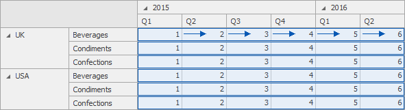
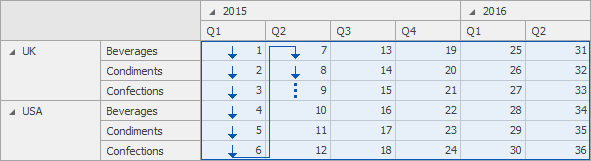
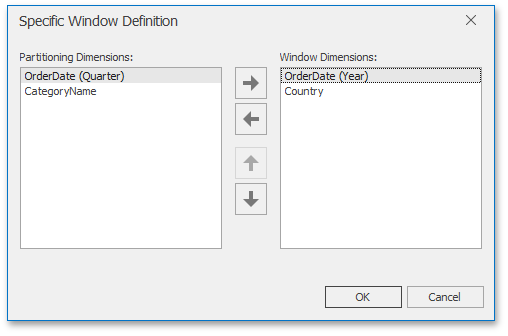

Window Definition
A window definition specifies a window that limits measure values participating in a calculation. To learn more, see Window Calculations Overview.
Dashboard Item Window Definition
The following table lists window definitions in terms of the Pivot dashboard item. A calculation is performed using the Index function along the following directions.
| Direction | Description | Example | Example Description |
|---|---|---|---|
| Columns | A calculation is performed horizontally through Pivot columns. |  | In this example, a window is a combination of Country/Category dimensions. |
| Rows | A calculation is performed vertically through Pivot rows. |  |
In this example, a window is a combination of Year/Quarter dimensions. |
| Columns / Rows | A calculation is performed horizontally through Pivot columns, then rows. |  |
In this example, a window is the entire pivot table. |
| Rows / Columns | A calculation is performed vertically through Pivot rows, then columns. |  | In this example, a window is the entire pivot table. |
| Columns within Groups | A calculation is performed horizontally through Pivot columns within groups. |  |
In this example, a window is a combination of the Country/Category and Year dimensions. |
| Rows within Groups | A calculation is performed vertically through Pivot rows within groups. |  |
In this example, a window is a combination of the Year/Quarter and Country dimensions. |
| Columns / Rows within Groups | A calculation is performed horizontally through Pivot columns then rows within groups. |  |
In this example, a window is a combination of Country/Year dimensions. |
| Rows / Columns within Groups | A calculation is performed vertically through Pivot rows, then columns within groups. |  |
In this example, a window is a combination of Country/Year dimensions. |
* Group - an area that is limited by a set of values corresponding to the bottommost partitioning dimensions.
Specific Window Definition
If necessary, you can manually specify the set of dimensions that fall into the window. These dimensions are called window dimensions.
For instance, the Index function is applied to measure values of the pivot table below using the OrderDate (Year) and Country window dimensions.

The Specific Window Definition dialog allows you to do this.
